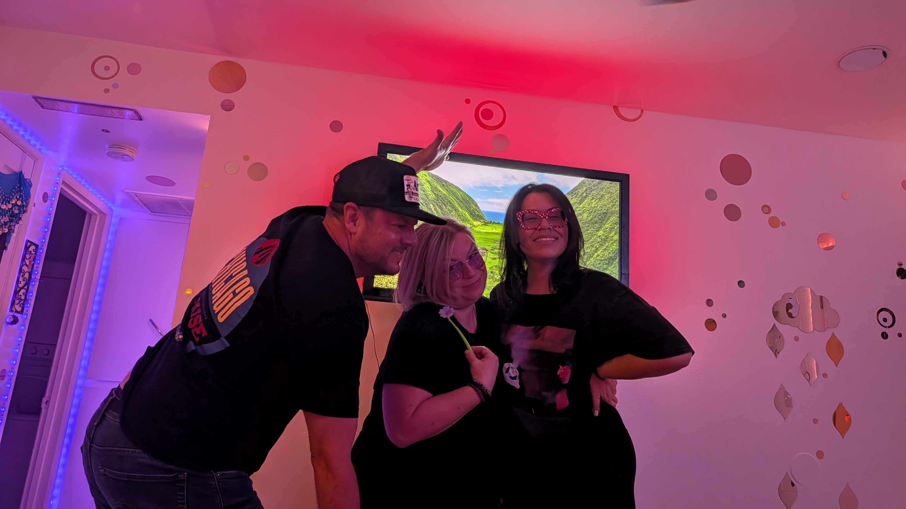

If a plant is dramatic, thirsty, sunburned, overwatered, or emotionally complicated, Scotti probably knows its side of the story.
Official fan club headquarters
Scotti
Gardener of vibes, knitter of mysterious cozy objects, professional sunshine collector, thrift-store treasure detector, craft-table chaos coordinator, and somehow still the person who actually listens.
We miss her. Like, immediately. Even if she just left the room.
- Plant whisperer
- Yarn supervisor
- Tan-line strategist
- Thrift goblet finder
- Craft tornado
- Grade-A listener

She can turn yarn into warmth, which is basically wizardry with better snacks and more counting.
She enters a thrift store and somehow leaves with the one object everyone else was too unworthy to notice.
There is probably glitter somewhere. Nobody knows how it got there. Scotti knows, but she will not be taking questions.
She treats sunlight like a scheduling partner. Calendar says bronze. Calendar wins.
She hears the words, the subtext, the sigh, and the tiny little "I'm fine" that absolutely was not fine.